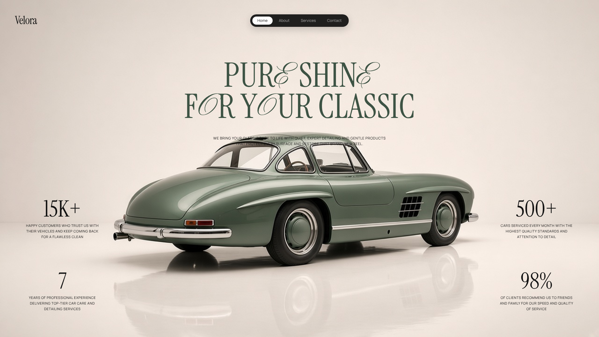
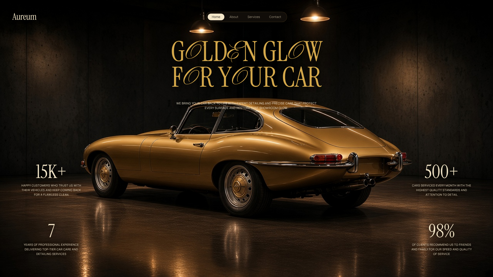
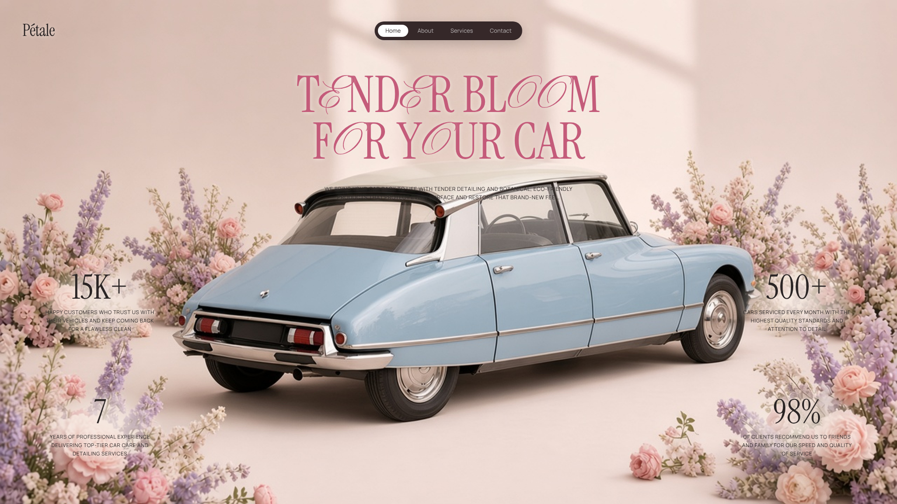

Three hero versions for a classic-car detailing showcase. Same layout as the reference — wordmark, pill nav, serif headline, four metrics, car centred — each with a different car, colour world and mood. Pick one to build.
Mercedes-Benz 300 SL Gullwing · cream studio · sage metallic · quiet luxury atelier

Jaguar E-Type Series 1 · dark garage · antique gold · nocturnal, cinematic

Citroën DS · pastel botanical set · powder blue and blush florals · soft French atelier
